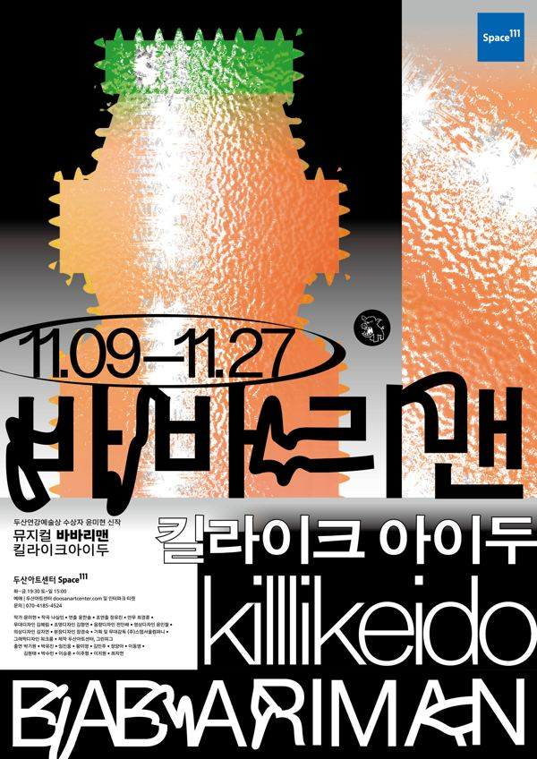

파고다 공원 앞, 노인들 틈에 섞여 물가를 잡겠다며 피켓을 든 중학생 호미. 비밀을 가진 할아버지, 떠난 사랑에 눈먼 엄마, 아빠라 부르고 싶지 않은 바바리맨이 호미의 가족이다. 친구 궁전은 돈만 버는 엄마가 답답하다. 사춘기의 정점에서 비뚤어진 두 가족을 관통하는 사건이 벌어진다. 평생 하나의 사랑을 잊지 못하고 좇는 감정, 그리고 그것을 집착으로 여기고 개입하는 시선에 관한 '노래가 있는 연극'.
2021.11.9–27 / 두산아트센터 Space111 - 두산연강예술상 수상자 신작
작: 윤미현
작곡: 나실인
연출: 윤한솔
조연출: 정유진
안무: 최경훈
무대: 김혜림
조명: 김형연
음향: 전민배
영상: 윤민철
의상: 김지연
분장: 장경숙
기획·무대감독: 스탭서울
그래픽디자인: 워크룸
제작: 두산아트센터, 그린피그
출연: 박기원, 박유진, 임진웅, 황미영, 김민주, 정양아, 이동영, 김원태, 박수빈, 이승훈, 이주형, 이지원, 최지현
이전: 〈홈스윗홈-도로시편〉 | 다음: 〈입정하다〉
아카이브로 돌아가기 | 아무 작품이나
발행일 2026.11.9